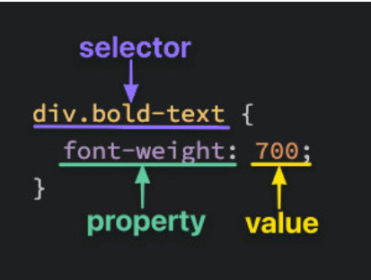
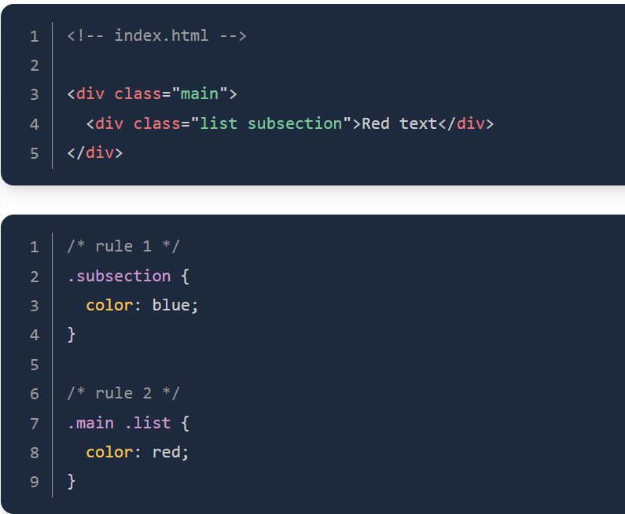
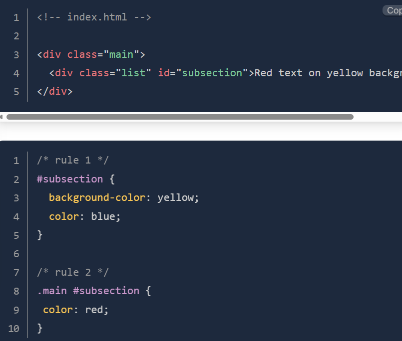
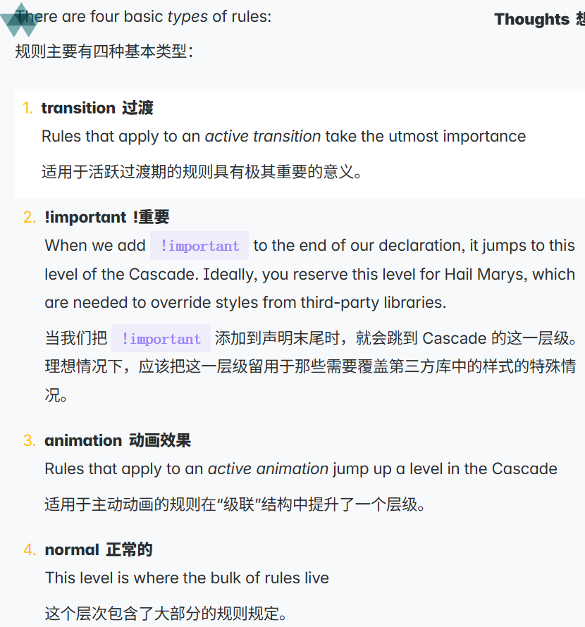
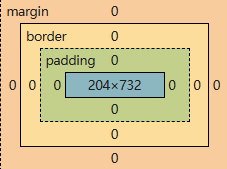
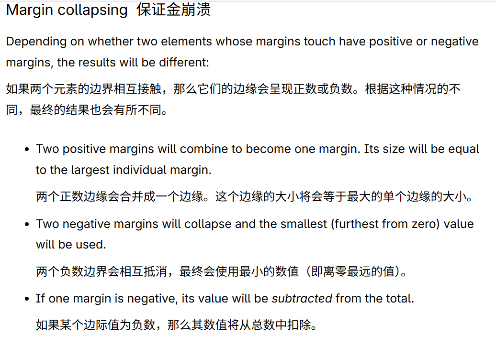

12.test
Red text
基于Odin项目文档做的笔记
another test
more test test
Odin项目链接
About The odin Projectbilibili:Bilibili
Odin项目链接
About The odin Projectbilibili:Bilibili
绝对链接是指从根目录开始的完整路径链接
例子如上
相对链接是指相对于当前页面的路径链接
例如这个关联页面 关于
这是一张就jpg图片
绝对路径

相对路径

这是一张gif图片(what can i say)

< 和 > 和 & 这些字符被称为“保留字符”。因为如果不进行编码的话，就不允许将这些字符插入到 HTML 文档中
保留字符是指在HTML中具有特殊意义的字符,需要使用实体引用来表示
例如:< > & " '
分别显示为:< > & " '
嗯,还有中文的引号,左右版本
“ ”
分别显示为: “ ”
基本语法:

如果类名以数字开头，那么类选择器将无法起作用。例如，如果你给某个元素指定类名为 4lert-text ，那么使用 .4lert-text 作为选择器是无法匹配该元素的。
关于`class`属性，另一项用法是：可以将多个类名以空格分隔的方式添加到同一个元素上，例如` class="alert-text severe-alert" `。由于类名之间是用空格来分隔的，因此对于由多个单词组成的类名，不应使用空格，而应使用连字符来分隔。
ID 选择器与类选择器类似。它们都是用来选中具有特定 ID 的元素。ID 是另一种可以添加到 HTML 元素上的属性。类和 ID 的主要区别在于：ID 是唯一的,一个元素只能有一个 ID。同一个页面上不能重复使用同一个 ID，而且 ID 中不能包含任何空格。
不过，除非确实有必要，否则应尽量少使用 ID,另外ID 选择器也不能以数字开头1.test
2.test
3.test
4.test
5.test
6.test
7.test
8.test
9.test
10.test
11.test
内部 CSS（或嵌入式 CSS）指的是在 HTML 文件内部添加 CSS 代码，而不是创建一个完全独立的文件。采用这种方式时，将所有 CSS 规则放在一对 <style> 标签内，然后将这些标签放在 HTML 文件的 <head> 标签内。由于样式直接位于 <head> 标签内，因此不再需要外部方法中所使用的 <link> 元素。
ID选择器 > 类选择器 >类型选择器
另外值得说明的一点是，只有当某个元素存在多个相互冲突的声明时才会考虑特异性要素，且如果比较特异性后仍然无法确定胜者，那么就会比较同一类别中选择器的数量。拥有更多选择器的选择器将具有优先权。
下面是odin里面的例子

两条规则都只使用了类选择器。不过，第二条规则更为具体，因为它使用了更多的类选择器，因此` color: red `的声明会具有优先权(目前详情对应css文件里的第68行)
需要着重说明的一点是，特异性只针对冲突规则，举个例子

这里虽然 color: red 的声明具有优先级，但由于没有其他冲突的声明，因此 background-color: yellow 的声明仍然会被应用。
简单来说就是一些类似字体的属性(如 color 、 font-size等)会被使用该属性元素的子元素继承(如果你不指定子元素样式时)
简单概括就是如果冲突规则在上面两个判断下依旧上打平了，就用后面一个规则


需要注意的一点是，margin其实并不是元素的一部分，只是元素间的空间，两个元素间的空间取两个元素中margin值大的那个
上面那句话一般是对的，因为一般是两个正值，但是完善的说看下面的图

关于box-sizing: border-box简单来说width和height属性默认是content的，而不是element的，element整体的高度宽度是在content基础上加上padding和border的。
而box-sizing: content-box则使width和height属性对应element整个元素区域的大小。
block即是display:block默认情况下，块级元素会在一个接一个地堆叠在页面上，每个新元素都会开始在新行上显示。
常见的默认为block的元素有：h1-h6, p, div, ul, ol, li等。
inline即是display:inline默认情况下，内联元素不会开始在新行上显示，而是会与其他内联元素在同一行上显示。
常见的默认为inline的元素有：a, span, strong, em等。
inline-block即是display:inline-block默认情况下，内联块级元素会与其他内联元素在同一行上显示，但可以设置宽度和高度。
简单来说，就是中间方案，介于block和inline之间。
1. float 对应的值有left、right和none,会导致块级元素只显示在一侧
2. position(精确控制元素在其他容器内的位置) 对应的值有static(默认布局方式)、fixed(固定元素位置)和relative(相对位置)，会导致元素脱离文档流
3. display(控制元素的显示方式) 对应的值有block、inline、inline-block等
4. Responsive design 响应式设计 指的是创建能够适应不同设备渲染网页的布局（例如桌面和手机）。响应式设计本身不提供任何特定的布局工具;它最重要的组件是 @media AT-rule，允许你根据设备属性（如屏幕宽度或分辨率）应用不同的布局。
不常用的其他布局:Table layout表格布局，Multi-column layout多列布局
div是默认为block的空容器
span是默认为inline的空容器
就是如此而已